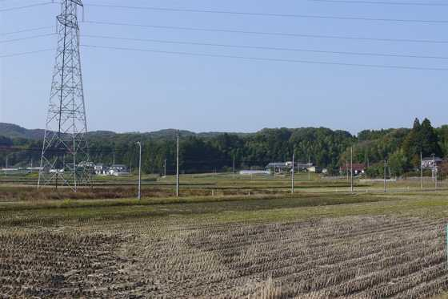
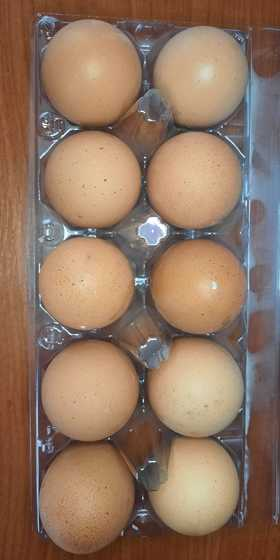
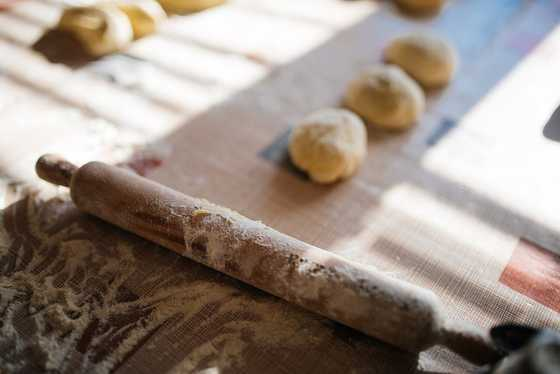
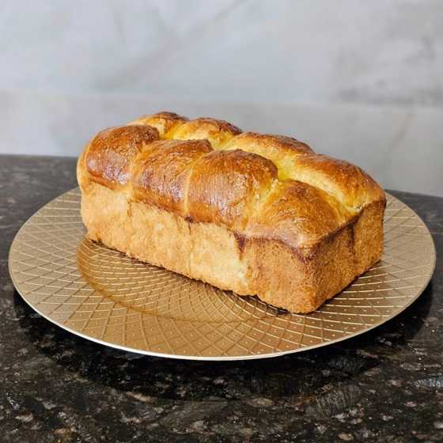
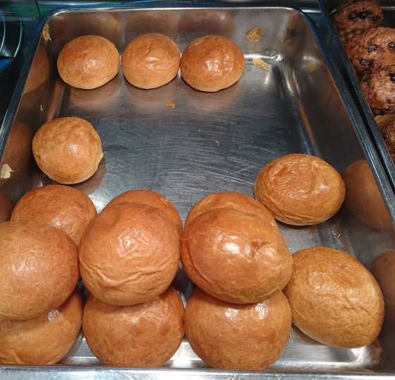
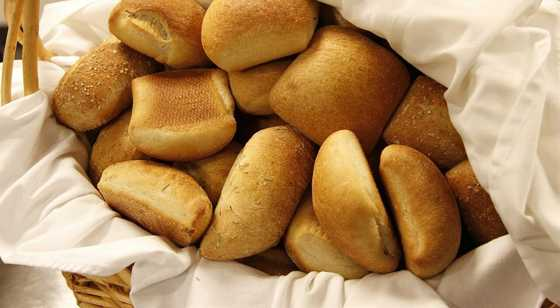
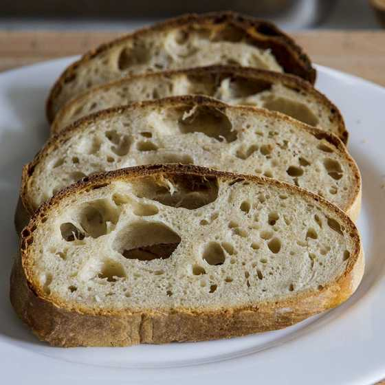
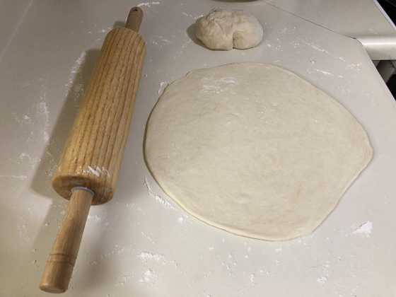

TOYOTA OBARA / HANDMADE BREAD
里山の素材で、
わが子に食べさせたい
安心なパンを。
豊田市小原の素材とやさしい味わいを、木曜と土曜に焼きたてでお届けするパン屋さんの案内ページ(制作見本)です。
お店の想いを見る
TOYOTA OBARA / HANDMADE BREAD
豊田市小原の素材とやさしい味わいを、木曜と土曜に焼きたてでお届けするパン屋さんの案内ページ(制作見本)です。
お店の想いを見る




※店名の意味や創業の経緯は確認できていないため、ここでは触れていません。
取材記事では、ハートチョコぱん・オレンジカップパン・メロンパン、人気の焼プリンなどが紹介されています。並ぶパンは日によって異なり、一期一会です。価格・詳細なメニューは準備中です。

小麦粉を多めに配合した看板の食パンが紹介されています(出典: 小原商工会)。

子どもからお年寄りまで親しみやすいラインナップ。画像はイメージです。

小原産「ミネアサヒ」を使用した米粉パンがあります。画像はイメージです。

菓子パン系・惣菜系など種類が豊富とされています。

バターの風味を活かした食べ方のイメージです。

価格・メニュー詳細は準備中です。



子どもが食べやすくて、素材のやさしさが伝わってきました。次は食パンも買いたいです。
山あいの道を走ってきた甲斐がありました。焼きたてのいい香りに迎えられました。
お店の方が気さくで、パンの話も楽しかったです。来週もまた寄りたくなります。
※上記は制作側が作成したイメージ例であり、実在のお客様の声ではありません。
掲載写真はフリー素材のイメージで、店舗の実際の商品・店内の様子ではありません。他地域や海外で撮影されたもの、撮影地が不明なものを含みます。